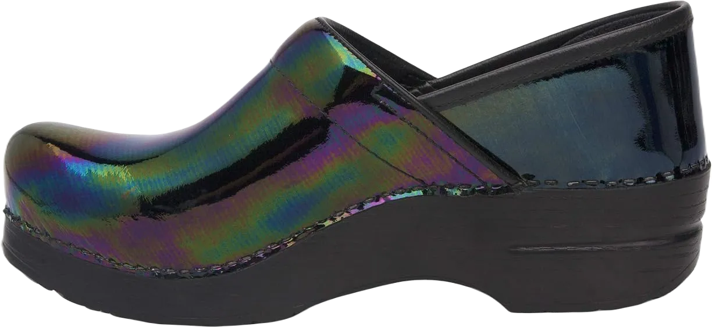
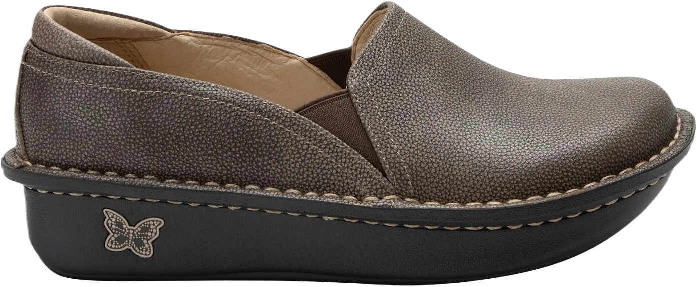
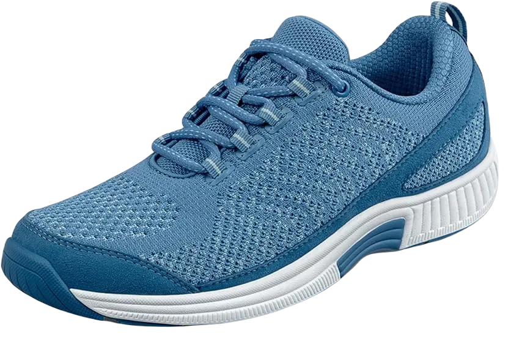

11 Best Shoes for 12 Hours Shifts In 2024
Wearing shoes for a continuous 12 hours can be incredibly challenging. Prolonged wear can lead to poor foot health and significant pain if the right footwear isn’t selected. Many professions, such as nursing or call center operations, require extended shifts beyond the typical 9 to 5, making it essential to invest in the best shoes for long hours on your feet.
While many shoes may initially appear to meet your needs, those specifically designed for long shifts prioritize foot health and comfort. Typically, athletic or sports shoes are recommended for their superior cushioning and support, accommodating the dynamic movements and energy demands of such roles.
-
#1
Brooks Levitate 2
.webp)
The Brooks shoes are celebrated for their elegant design and professional-grade construction, allowing you to wear them with confidence and comfort. These sneakers are built with resilience and feature a removable footbed, offering substantial support and enhanced comfort for all-day wear.
The outsole is designed with an arrow-style pattern that improves traction while walking or running, effectively reducing slips on smooth surfaces. The soft heel tab helps secure the foot, making prolonged wear more comfortable and safe by alleviating strain.
Additionally, the high arch design is ideal for those seeking extra foot support. The energized cushioning incorporates DNA AMP midsole technology, optimizing your walking pace while ensuring your feet remain well-supported throughout the day. -
#2
Dansko Professional Patent Clog
If you're a professional working twelve-hour shifts, sacrificing style is not an option. You need to maintain a polished and contemporary appearance, making the Dansko clog an excellent choice. Crafted from imported Cabrio leather and featuring a polyurethane sole, this shoe boasts a 2-inch heel drop.
Standing or walking for long periods is a breeze with this pharmacist shoe, thanks to its shock-absorbent properties that make it suitable for stairs and rough surfaces. The combination of high-quality leather and fabric in the uppers ensures a superb fit and durability.
Additionally, the well-padded insteps and soft collar provide exceptional comfort, allowing you to wear them without feeling heavy or fatigued. The spacious reinforced toe box enhances walking security and protects your toes from injury. The PU outsole is reliable and effective on various floor types, while the wider heel adds stability every time you wear these shoes. With its oiled leather finish, the Dansko clog not only delivers comfort but also complements your overall look impressively. -
#3
New Balance Women’s 520 V5
.webp)
Nurses often find themselves on their feet more than anyone else in the workforce. The demands of the profession require constant movement, and that’s where this shoe from New Balance comes into play, providing springy footsteps and a comfortable interior. Its imported rubber sole is not only durable but also offers exceptional flexibility, adapting to the various terrains you may encounter throughout your shift.
Designed for underfoot comfort, this shoe features quality injection-molded EVA foam insoles that effectively absorb shocks. The plush cushioning and comfort inserts feel fantastic, making it perfect for navigating rough, uneven surfaces.
With breathable mesh synthetic uppers, the shoe allows for proper airflow, keeping your feet cool and dry. Its stylish design strikes a balance between comfort and professionalism, meeting the standards expected in the nursing field. -
#4
ECCO Men’s Fusion Slip-On Loafer
.webp)
If you prioritize foot comfort and want to ensure they feel great during long twelve-hour shifts, the ECCO Fusion is an excellent choice for men. Crafted entirely from 100% leather, this shoe features an imported rubber sole that adds to its durability and traction.
Designed with a focus on fit and comfort, the interior of this shoe provides a perfect combination of support and cushioning. The insoles are resilient and soft, offering a spacious forefoot area while having a slightly narrower heel. This design allows your feet to spread naturally, preventing that cramped feeling often experienced during extended wear.
Additionally, the polyurethane outsole delivers exceptional traction on polished surfaces, ensuring stability with every step. The ECCO Sprint Training incorporates shock-absorbing elements, minimizing impact whether you’re walking on hard floors or climbing stairs. Its durability and high-quality craftsmanship are what keep customers loyal to the brand. -
#5
Crocs Men’s Santa Cruz 2 Luxe Slip-on
.webp)
The ideal shoe for a 12-hour shift needs to offer exceptional comfort and support. Key features such as soft insoles and cushioned padding are essential, as your tired feet will crave relief after a long day. Consequently, the focus should be on the quality of the interior and outsole, rather than just the shoe’s exterior, when selecting footwear for extended wear.
Enter the Crocs Men’s Santa Cruz 2 Luxe shoe, which stands out with its high-quality features and user-friendly design. This shoe is remarkably lightweight and constructed from synthetic materials, making it easy on the feet. Its attractive style and polished appearance lend themselves to a professional yet casual look, perfect for various settings.
Moreover, the inner sole is crafted from a soft, adaptable material that provides instant comfort and relaxation the moment you step in. You can rely on its durability, ensuring that this shoe will maintain its quality over time. -
#6
Alegria Debra Professional Women Slip-on
The Alegria Debra Professional Women’s slip-on shoe is recognized by the APMA for its exceptional support and comfort. Crafted with leather uppers that are hand-stitched, this shoe not only offers enhanced style but also improved grip. Its removable footbed, designed for arch support, makes it easy to swap in OrthoLite insoles, providing the cushioning needed to comfortably bear strain and pressure throughout the day.
In addition to its thoughtful design, the shoe features a slip-resistant sole that ensures secure footing and allows for swift movement. The durable rocker outsole is crafted to endure daily wear, and its moderate height ensures that you can comfortably wear the shoe for extended periods without discomfort.
Constructed from high-quality materials, this shoe is built to last. Its excellent support and cozy interior make it a great option for spending long hours on your feet. What’s more, the Alegria Debra comes in a wide array of colors and styles, offering professional women the chance to express their personal style while maintaining comfort and functionality. -
#7
ASICS Women’s Gel-Challenger 12
.webp)
Asics has long been a reputable name in footwear, particularly for those prioritizing comfort. Their latest offering, the Gel-Challenger, is specifically designed for individuals working over 12 hours, making it an ideal choice for nurses. This tennis shoe provides exceptional support for the feet.
Constructed with a combination of fabric and synthetic materials, it ensures durability while allowing breathability. The imported rubber outsole enhances flexibility and resilience, making activities like running or brisk walking effortless. Additionally, the shoe features a detachable sock liner, allowing you to easily insert an orthotic insole if desired.
Moreover, the Trusstic System technology reduces the overall weight of the sole, enhancing comfort. With gel cushioning located at both the rearfoot and forefoot, this Asics shoe is designed to alleviate strain on the feet and support multi-directional movements, making it a great option for those on their feet all day. -
#8
Women’s Adidas Ultraboost 20
.webp)
The Adidas Ultraboost 20 is among the top choices for work and outdoor activities. From its striking outer appearance to the comfortable wearing experience, you’ll find it hard to take these shoes off. Specifically designed for runners, the quality of the outsole reflects its superior craftsmanship. Made entirely of textile with an imported rubber sole, this shoe effectively ensures your feet stay comfortable throughout the day.
With low-top arch support, this shoe allows for stable and confident steps. The elegant design and high-quality fabric make it suitable for those enduring twelve-hour shifts. Inside, the soft collar, tongue, and cushioning enhance overall foot relaxation, while the Primeknit uppers provide a snug fit, maintaining support during all types of movement.
When examining the heel and toe design, you'll appreciate its excellent grip and resilience on various surfaces. The low-profile design makes it versatile enough for indoor use as well, making it a great option for workouts or long hours of standing, especially for nurses. -
#9
Skechers Work Sure Track
.webp)
This shoe prioritizes comfort for all-day wear, featuring a leather construction and a rubber sole that perform exceptionally well. The lace-up closure ensures an ideal fit, while the low-cut design with Skechers Relaxed Fit® enhances its ergonomic and adaptive qualities. The lace-up style allows for easy adjustments, enabling you to achieve a snug fit tailored to your foot shape.
Inside, the shoe boasts a plush, soft interior complemented by a padded tongue and collar. The fabric is gentle on the skin, preventing any abrasions or rashes. Whether you’re at work, hitting the gym, or enjoying a casual day out, this shoe is versatile enough for various terrains. Its ventilated lining promotes airflow, reducing sweat and moisture that can lead to bacterial infections.
To maintain traction and stability with every step, this shoe features an anti-slip nitrile rubber outsole. This means that even on slippery surfaces caused by rain or spills, you can rely on its grip for safety and confidence. -
#10
Merrell Men’s Encore Gust Slip-on
.webp)
Let’s conclude the list with the Merrell Men’s Encore slip-on shoe. If you’ve been searching endlessly for suitable footwear, this model stands out as an excellent choice. Its high-quality construction and robust outsole assure durability and reliability across various occasions. Made from 100% full-grain leather and equipped with an M-Select Grip sole, this shoe combines a polished slip-on design with a supportive sole unit and padded collar for enhanced comfort.
The OrthoLite footbed is a key feature, offering dependable support for foot health. Additionally, the mesh liners promote optimal airflow, helping to keep your feet dry and cool throughout the day. The compression-molded EVA midsole technology effectively absorbs shocks and impacts, contributing to stable footsteps.
Furthermore, the adaptive nylon arch shank adds to the comfort level, while air cushioning in the heel mitigates impact. Merrell has consistently delivered quality and stylish footwear, ensuring that buyers remain satisfied with their choice. -
#11
Orthofeet Coral Women’s Comfort
When selecting shoes for extended wear, comfort is paramount; they should not feel stiff or restrictive. The Orthofeet Coral Women’s Comfort Orthopedic Sneaker addresses this need with its gel cushioning and padded heel, significantly enhancing comfort and allowing for a more agile stride. Its lightweight sole makes it an ideal choice for environments like hospitals, where mobility is crucial.
This shoe features a non-binding extra-depth design that is adjustable, providing exceptional ease of movement. This design is especially beneficial for those suffering from bunion pain or other joint discomfort, as it prevents unnecessary pressure on the feet.
Equipped with breathable mesh uppers, this sneaker effectively ventilates your feet, eliminating sweat and moisture build-up.